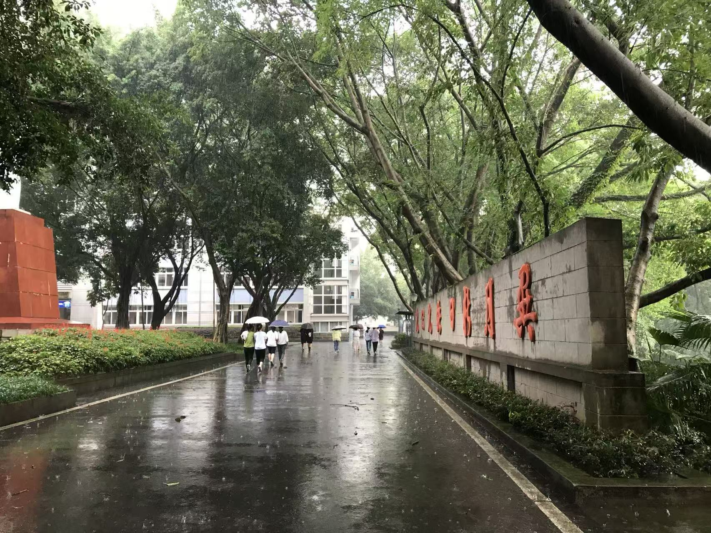

春望

走在广东的春天，就像走进了重庆的夏天，随后是转瞬即逝的秋天与出生的冬天，季节只是一种轮回的重复，脑中不断回响的是大佑哥写给张艾嘉的“冬天已去 冬天已去 春天在在遥远里向我们招手”。
今日听到一些旧事，不过笑谈，大笑过后是感伤。原先仰慕的两人，都不过酒色之徒，风流之事，一笑也就过去，最后吃下苦果，也许也是心甘情愿，旁人却难忘记。

走在广东的春天，就像走进了重庆的夏天，随后是转瞬即逝的秋天与出生的冬天，季节只是一种轮回的重复，脑中不断回响的是大佑哥写给张艾嘉的“冬天已去 冬天已去 春天在在遥远里向我们招手”。
今日听到一些旧事，不过笑谈，大笑过后是感伤。原先仰慕的两人，都不过酒色之徒，风流之事，一笑也就过去，最后吃下苦果，也许也是心甘情愿，旁人却难忘记。